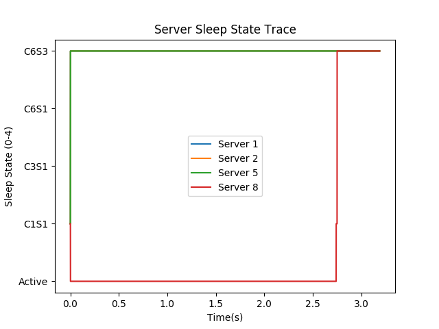

Compiled project into a .jar (Java Executable File) to be run from the command line
Created a shell script which first runs the .jar file with the correct command line arguments, next runs the output parser which provides information about the executed experiment and finally runs the python scripts which analyze and graph the data stored in the log directory
User can now run the one experiment.sh script which runs the java project executable and generates and saves the logs and graphs for this experiment
Parametrized the number of samples taken when graphing the data collected using an entry in the configuration file. Allows user to lower the number of samples for longer tests or raise the number of samples for shorter tests to gain more accuracy.
Fixed the scaling on the server and switch trace graphs to show the sleep states instead of just numbers between 0 and 4:

In Progress: